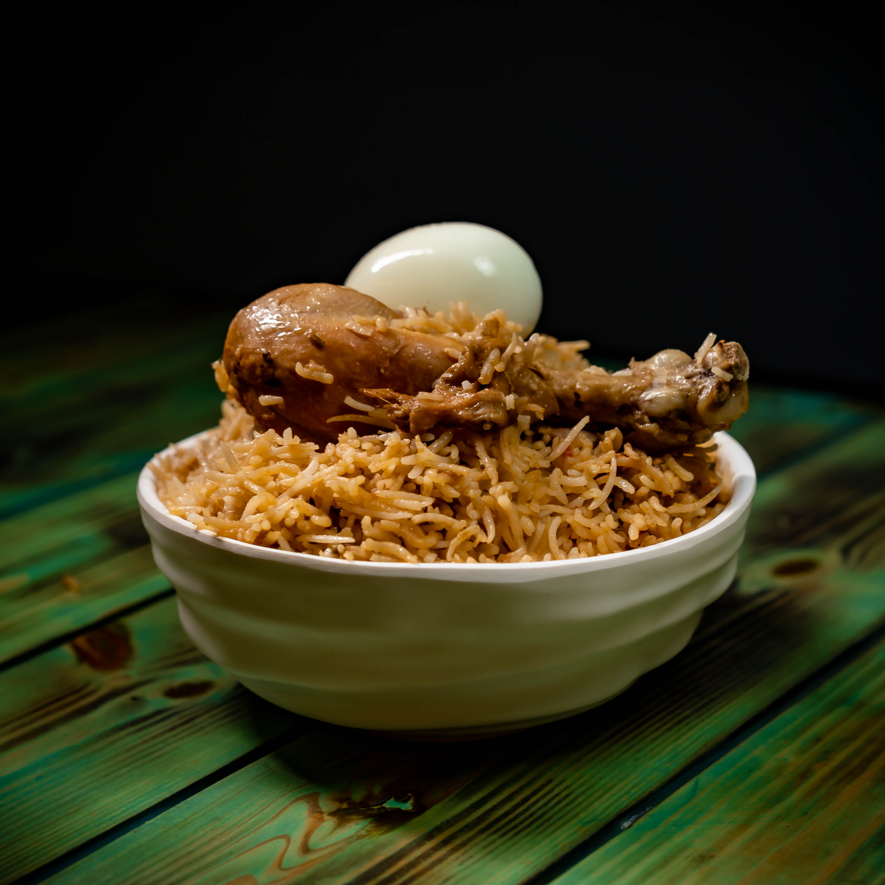

Delicious Biryani

Ingredients
- 2 cups Basmati rice
- 500g Chicken or Mutton
- 1 large Onion, sliced
- 2 Tomatoes, chopped
- 2 tablespoons Ginger-garlic paste
- Spices: Bay leaves, Cinnamon, Cloves, Cardamom
- 1/4 cup Yogurt
- 1/2 cup Fresh coriander leaves, chopped
- 1/4 cup Ghee or oil
- Salt to taste
- Water (for cooking rice)
Steps
- Wash and soak the Basmati rice for 30 minutes.
- Heat oil in a large pot and fry the sliced onions until golden brown.
- Add the ginger-garlic paste, chicken/mutton, and cook for 5 minutes.
- Mix in chopped tomatoes, spices, yogurt, and cook for another 10 minutes.
- In a separate pot, cook the rice with water and a pinch of salt until 70% done.
- Layer the partially cooked rice over the meat mixture and cook on low heat for 15-20 minutes.
- Garnish with fresh coriander and serve hot!